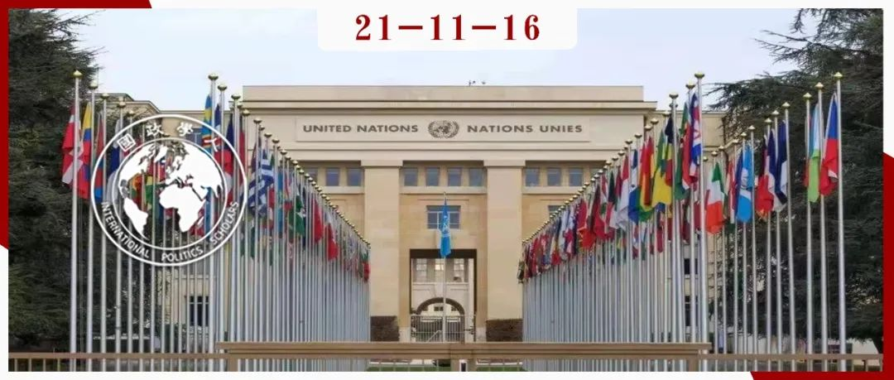
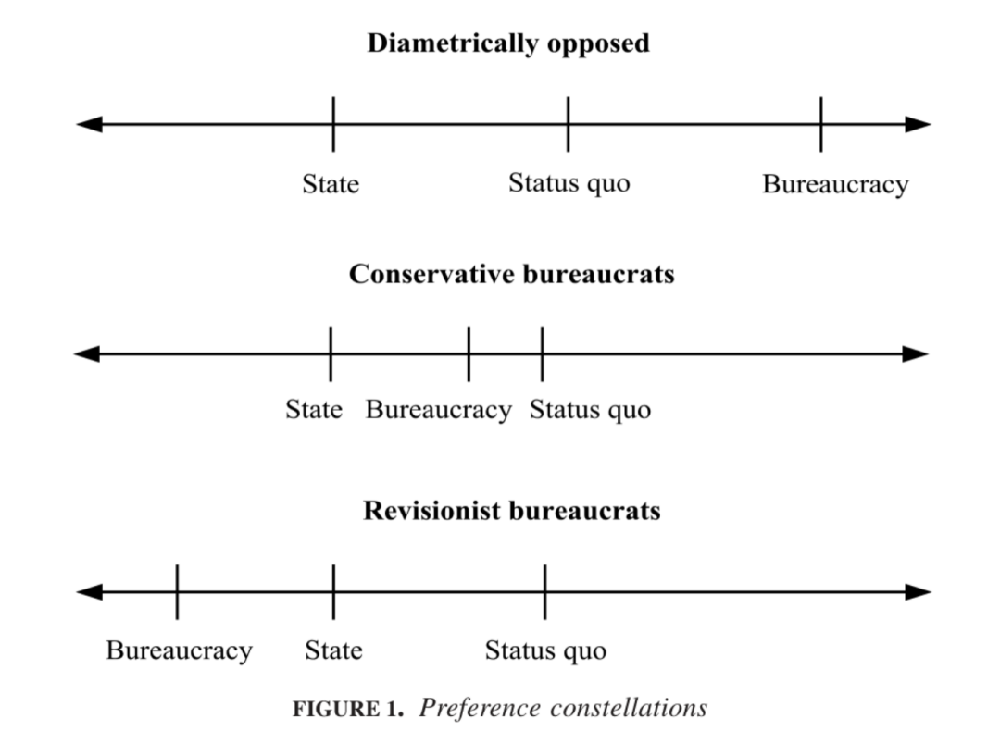
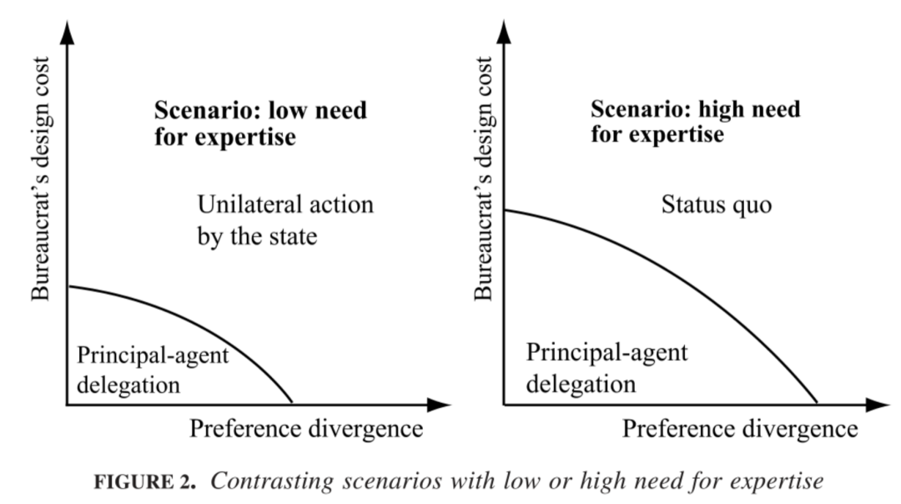
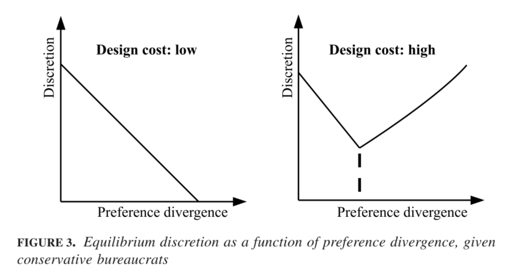
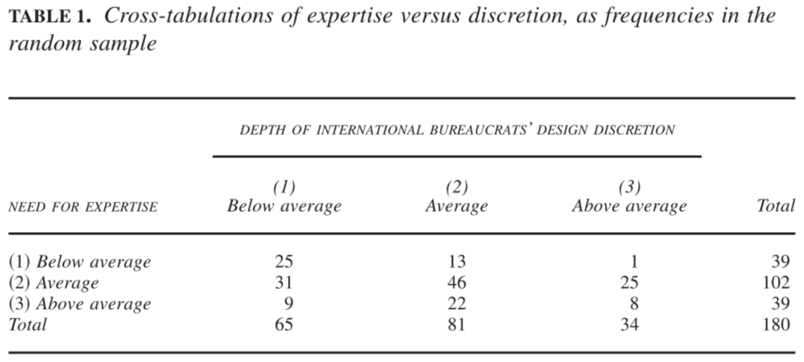

收录于合集

作品简介
作者： Tana Johnson，杜克大学公共事务和政治学教授；Johannes Urpelainen，约翰·霍普金斯大学高等国际研究院能源、资源和环境教授。
编译： 张潇文（国政学人编译员，山东大学外国语学院法语（国际组织）专业）
来源： Johnson, T., & Urpelainen, J. (2014). International Bureaucrats and the Formation of Intergovernmental Organizations: Institutional Design Discretion Sweetens the Pot. International Organization , 68(1), 177-209
DOI:https://doi.org/10.1017/S0020818313000349
归档： 《国际关系前沿》2021年第11期，总第38期。

内容摘要
在国际政府间组织(IGO)工作的官僚可以帮助国家设计一个新的政府间组织，但其制度设计的自由裁量权的大小不一。有时，即使他们公开地反对行为体偏好，他们也能获得一定的自由裁量权。这与国家授权国际官僚的传统思维相违背，即自由裁量权应随着国家和国际官僚之间偏好差异的增加而减少。本文提出了一个新的“国家- 国际官僚”的“委托-代理”理论，涉及到国家在设计新的政府间组织时给予国际官僚多少权力。
本文认为，即使是与国家行为体的设计偏好不一致的国际组织，也能享有很大的制度设计余地，其原因是国家需要借助这些官僚的专业知识。文章通过建立“委托- 代理”模型，案例研究和原始数据集进行论证。
文章导读
20世纪90年代初，艾滋病肆虐全球，包括世界卫生组织（WHO）在内的共六个国际机构向国家行为体大量筹资以应对。然而这些机构各自筹资、单独应对的行为招致了捐助国的愤怒，它们要求建立一个新的国际机构来代替所有的艾滋病相关组织。该提议遭到这六个国际机构的公开谴责。尽管如此，捐助国做出了令人费解的行为：将设计新国际机构的权力交给了这六个国际组织，直接导致了联合国艾滋病联合规划署（UNAIDS）的产生。
这与传统的委托代理理论（P-A theory）[1]相悖：代理人与委托人偏好差异越大，代理人的自由裁量权越小。传统的P- A理论认为，国家为了获取信息而将政策制定的权力委托给国际官僚，但为了防止机构滑脱而限制后者的自由裁量权。国家行为体和国际官僚分歧较大时，为何各国在创建联合国艾滋病规划署时授予国际官僚如此多的自由裁量权？为何国家要依赖那些反对新的政府间组织的人？换句话说，为什么公开反对委托人的代理人会获得广泛的自由裁量权？
01
理论与假设
本文假设，一些外部冲击导致了新的国际合作问题产生，而没有一个现存的政府间组织能够适应新情况。因此，尽管可能遭到反对，一些成员国仍考虑建立一个新的IGO，以有效解决新的合作问题并使自身受益。这种有效性取决于新的IGO的设计和结构。而国家可以尝试自行设计新的IGO，也可以寻求在现有组织内工作的国际官僚的帮助。
以国际能源署(IEA)的诞生为例。1973年石油危机之后，工业国家面临着一个全新的经济环境，国际合作需要新的协调政策。一些工业化国家利用该组织的一致同意规则来阻止政策协调倡议，使得现有的经济合作与发展组织(OECD)陷入瘫痪。因此，一些经合组织成员国要求成立一个新的国际石油组织，以解决石油危机造成的合作问题。尽管一些国家反对，但是它们无法阻止以美国为首的大多数工业化国家将合作转移到新成立的IEA。
第一阶段：选择是否委派
本文建立的模型分为两个阶段。第一阶段：国家决定是否将制度设计的任务委托给现有政府间组织的国际官僚；第二阶段：有条件的委派，即国家（委托人）给予国际官僚（代理人）多少自由裁量权。
在第一阶段中，如果政府选择不授权，它有两种替代策略：1、国家可以选择保持现状。然而，维持现状对国家和国际官僚来说代价高昂。2、国家选择创建一个新的政府间组织，而不将设计任务委托给现有政府间组织中的国际官僚。然而，国家缺乏IGO设计和运作的专业知识，因此可能会无意中设计出一个功能失调的IGO。
另一种选择是授权，即国家作为负责人，将机构设计任务交给现有政府间组织中的国际官僚。由于这些官僚拥有宝贵的管理专业知识，代理官僚可以更有效地设计一个新的IGO，以解决现有合作问题。
要避免将缺乏合适的场所与缺乏有用的专业知识混为一谈。一方面，专业知识可能分散在现有机构中。另一方面，现有机构可能处于瘫痪。就艾滋病规划署的创立而言，尽管六个不同的机构拥有关于流行病的医疗和其他方面的专门知识，但现有机构群并不是一个理想的合作场所，并不完全适用新的合作问题。
第二阶段：决定制度设计的自由裁量权，有条件的委托
国家可通过授予自由裁量权达到利用国际官僚专业知识的目的，但为什么不将自由裁量权完全授予给国际组织呢？原因是两者对IGO的设计偏好可能不同，国际组织可能通过特定的制度设计扩大其在未来政策中的影响力。因此，国家利用国际组织专业知识的同时，也担心国际官僚滥用自由裁量权。
原有IGO的国际官僚们也选择置身于设计谈判的内部而非外部，这样他们就能更好地塑造更有利于自己利益的制度设计。但他们可能选择“推卸责任”，不花费精力为国家收集信息、分析数据并开展设计，因为好的IGO设计需要花费昂贵的成本那么，国家主体如何能促使国际组织将其专业知识运用在IGO设计上呢?
通过增加自由裁量权，国家不仅可以最大限度利用原有国际组织的专业知识，还能增加了国际官僚在IGO设计中付出昂贵成本的预期回报。
需要注意的是，本文强调国家行为体对自由裁量权的事前规制。我们假设国家行为体可以选择自由裁量权的水平，但不会对逃避责任的代理国际机构进行事后惩罚。
实证预期
**
**
在第一阶段，国家如何决定是否授权。一个重要的决定因素是国家与国际组织偏好的差异。如图1所示，偏好差异共有三种情况：
第一， 国家和国际组织有着截然相反的偏好，这种情况下，两者倾向于对立。国家要么维持现状，要么单方面采取行动，不会对国际官僚进行授权。
第二， “保守的国际官僚”：两者在改变现状方面有共同的利益，但国家行为体比国际官僚的欲望更强烈，行为更激进。
第三， “激进的国际官僚”：两者在改变现状方面有共同的利益，但是代理官僚比国家行为体更喜欢激进的转变。以上两种类型的偏好差异可能产生互惠的授权行为。

如果国家选择不授权，它如何在单方面行动和维持现状之间做出选择？如图2所示，关键因素是设计一个新的、有效的IGO所需的专业知识水平。

假设外部冲击产生了新的合作问题，现有的政府间组织无法提供合适的场所。如果国家对于国际组织掌握的专业知识的需求很小（如左图），那么国家将会选择单方面行动，即自主设计并建立新的IGO；如果国家对于国际组织掌握的专业知识的需求很大（如右图），那么国家要么选择维持现状不建立新的IGO，要么授权国际官僚来设计新的IGO（即使两者的偏好差异相当高）。
解释授权的逻辑之后，我们现在可以关注主要研究问题：如何解释授权自由裁量权的差异？
本文假设：在国际组织的设计成本很高且处于“保守的国际官僚”情况下，随着国家和国际组织的偏好差异增大，后者的自由裁量权将会增加。这与传统的P- A理论相悖。额外的制度设计自由裁量权实际上是一种“诱惑”，为国际官僚（也就是代理人）增加了筹码，从而确保了其在新IGO设计中付出足够的努力。
图3显示了自由裁量权如何随偏好差异（纵轴）而变化（横轴）：左侧，代理官僚的设计成本较低，国家行为体于是选择最优的自由裁量权，而不必担心代理官僚的昂贵努力。我们的假设适用于右侧的条件，即代理官僚的设计成本很高。自由裁量权和偏好差异之间的关系一开始是成反比的，因为代理官僚认为国家主体的现状是糟糕的。但是，当代理官僚的理想点趋向于现状（远离国家行为体偏好的理想点）时，自由裁量权和偏好差异成正比，因为国家需要高度的自由裁量权来诱导代理官僚做出设计的努力。此时，国家必须在高度自由裁量权和完全不授权之间做出选择。

如果假设中的任何一个条件都不成立，那么自由裁量权和偏好差异始终负相关。传统的P-A理论仍然成立。
02
案例研究
第一个案例涉及联合国艾滋病规划署（UNAIDS）的建立。在这个例子中，本文的两个假设条件都成立，即国际官僚的设计成本高且官僚保守。当捐助国要求成立一个新的政府间组织来接管联合国系统内所有与艾滋病有关的项目时，世界卫生组织和其他五个国际组织的官僚反对这一想法，他们寻求保护自己的地盘，并确保抗击疫情的斗争是由受害者的需求而不是捐助方的利益驱动的。尽管他们与各国的偏好存在明显的分歧，各国还是邀请六个机构的官僚在UNAIDS的设计方面发挥核心作用。尽管国际官僚们面临着高昂的设计和创建成本，但国家通过在制度设计上提供自由裁量权来补偿他们。在这种情况下，即使国际官僚持有的设计偏好与国家持有的偏好明显不同，国家也可能在设计新IGO时给予他们实质性的自由裁量权。
第二个案例涉及国际能源机构（IEA）的建立，它不符合我们假设的高成本条件。原有国际组织，即经合组织的官僚们和某些国家都对现状不满，并认识到有建立新组织的需求。同时，国家需要专业知识来创建新的国际能源机构，而原组织的官僚们也承认新的IGO不会对他们造成威胁，也就是他们的设计成本相对较低，所以两者合作设计了IEA。
第三个案例涉及加勒比海环境项目(CEP)的起源，它不符合我们假设的保守国际官僚的条件。来自联合国环境规划署(UNEP)的官僚们提请关注海洋污染，各国一致认为应该建立新的组织来处理这个问题。然而，一旦联合国环境规划署的工作人员在地中海和波斯湾等地区建立了新的机构，各国就清楚地认识到这个机构的修正主义性质。美国试图在自己的地区（加勒比地区）抑制这种激进主义。通过减少对UNDP的财政支持，美国削减了该组织的官僚们对新组织（CEP）的制度设计自由裁量权。由此观之，如果国际官僚想更加激进地改变现状，国家可能会限制官僚们的制度设计自由裁量权。
本文的理论超越了传统的P-A理论，它表明偏好差异并不是决定自由裁量权的唯一因素，设计成本和专业知识也很重要。
03
数据分析
案例研究分析了本文的主要研究问题，即第二阶段：在选择授权的情况下，如何解释代理人自由裁量权的变化。接下来，本文使用数据同时分析第一和第二阶段。在第一阶段，如果国家选择不授权，它必须在保持现状（即不创建一个新的政府间组织）和单方面创建一个新的政府间组织之间做出选择。
研究设计
本文使用了新的原始数据集。它涵盖了180个政府间组织，这些组织是由国际组织联盟(UIA)从现有的政府间组织中随机挑选出来的。
本文试图解释现有政府间组织的工作人员在制度设计角色上的差异。本文区分三种不同类型的组织：第一类为由国家单独创建的组织（即国际官僚的自由裁量权低于平均水平）；第二类由国际谈判建立，原有IGO官僚仅提供信息和行政支持，但没有行使实质性的自由裁量权；第三类是由现有政府间组织的官僚大量投入创建的组织（即国际官僚的自由裁量权高于平均水平）。本文发现只有大约三分之一的政府间组织是由国家单独创建的。具体来说，大约65个政府间组织属于第一类，大约80个属于第二类，大约35个属于第三类。
接下来，本文根据各个IGO活动所需的专业知识，对180个随机抽样的观察结果进行分类和编码：第一类：处理高技术性或科学性问题的组织（需要高于平均水平的专业知识）；第二类：普通的国际组织（需要平均水平的专业知识）；第三类：基本上只是论坛的组织（不需要太多专业知识）。大约有100个对象属于第二类，而其他两类各包含大约40个。
相关性和交叉表
对专业知识的需求和国际组织设计自由裁量权程度之间确实是正相关的，相关系数为0.27。当新机构对专业知识的需求“低于平均水平”时，现有政府间组织的工作人员倾向于“低于平均水平”的自由裁量权——也就是说，国家根本不委托代理官僚，而是自己创建了这个机构。相比之下，如果新机构对专业知识的需求是“中等水平”或以上，那么现有政府间组织官僚的自由裁量权也往往是“中等水平”或以上。如表1。

为了进行比较，交叉列表的数字也可以用百分比来验证。需要“低于平均水平”的专业知识的机构中，绝大多数（64%）是由国家单独创建的，而只有3%是由已存在的IGO官僚创建的。这完全符合我们的期望。需要“高于平均水平”的专业知识的机构中，只有23%是由各国单独创建的，而IGO自由裁量权“平均”或“高于平均”的百分比分别为56%和21%。虽然不是严格的线性关系，但交叉表格提供了支持预测的初步证据：处理需要专业知识的问题的新机构似乎更有可能是由在现有IGO工作的国际官僚们参与创建的，官僚们在其中行使重要的机构设计的自由裁量权。
差值计算与匹配
如果被处理和未被处理的实验对象多元分布不相同，则平均值差异计算可能会产生误导。因此，本文也采用匹配估计来控制预处理协变量。具体来说，本文使用粗化精确匹配(CEM)软件来解释两组实验对象之间的创建时间和每个IGO所覆盖的问题区域的差异。
在对这些变量进行匹配，并删除不匹配的观察数据后，数据集的不平衡度量降为0，这表明数据非常平衡。由于匹配确保了处理现在与问题区域和创建时间无关，因此没有必要进一步控制这些变量。相反，在匹配的数据上进行简单的意义差异就足够了。
匹配后，本文始终发现两组之间存在实质性和统计学上的显著差异。正如所预测的那样，随着对专业知识的需求增加，国际组织在机构设计上的自由裁量权也会增加。
04
总结
本文在传统的P- A理论的基础上发展了一个新的理论，并使用定性和定量的数据来检验它。本文表示，一个国际组织及其官僚可能在制度设计上拥有相当大的自由裁量权，即使国家和国际机构之间存在很大的偏好差异。实际上，自由裁量权是一种国家“诱导”和国际官僚“增加筹码”的方式，以便国家行为体可以从国际官僚的专业知识中获益更多，同时也增加了代理官僚在IGO设计中付出 昂贵努力 的预期回报。
本文的理论可以得到多方面拓展。首先，各国的偏好彼此不同的情况下，国际官僚可能会让它们相互竞争，以增加自己的议价能力。其次，在国际官僚议价能力被削弱的情况下，也许国家本身能够产生自己所需的专业知识。例如，通过学习具有类似功能的现有IGO的设计。
对于该理论的未来研究有以下几种可能性。首先，国际组织是否可能在国家之间的谈判游戏中被战略性地部署为“卒子”。既然国际组织的专业知识为他们在谈判中提供了杠杆和权威，对于那些无力影响新IGO设计的国家来说，他们是宝贵的盟友。其次，国际组织是否有动机向国家谎称其专业知识和设计成本。如果代理官僚的自由裁量权取决于这些因素，那么他们可利用这些信息来获得额外的自由裁量权。随之而来的一个研究方向是：国家如何鉴别这种信息不对称并区分具有不同专业知识水平的代理官僚。最后，如果国际组织的官僚们是某一问题的重要专家，他们可能会形成一个“知识社区”，为新组织创造政治需求，自行决定设计和推动IGO的创建。这一可能性将使我们现有的委托人和代理人如何互动的概念进一步复杂化。
译者评述
本文在传统的委托人-代理人（P-A理论）的基础上展开，指出了原有理论的不恰当之处，并提出了新的研究视角，从新IGO创建的角度出发，补充并扩展了原有理论。
作者首先提出假设，设定外部冲击导致原有国际组织应对不力的情景，从而引出成员国考虑建立一个新的IGO的可能，同时指出国家可能寻求原有国际组织内的国际官僚的专业帮助。本文设计了一个模型，在这个模型中，国家行为体首先决定是维持现状还是建立一个新的IGO。如果是后者，接下来将决定现有IGO的国际官僚在设计新机构时拥有多大的自由裁量权。该模型表明，当国家需要国际机构掌握的专业知识时，不管其制度设计的偏好是否与国家的不同，国际官僚都可以在新国际组织的设计上有相当大的运作余地。而自由裁量权则成为国家行为体“增加筹码”的一种方式，从而确保国际官僚们付出相当的努力来进行制度设计。该模型分为两个阶段，作者分阶段进行实证研究和案例分析，最终进行数据分析和误差校正，尽可能减少模型误差对实证结果的影响。
本文对于国际组织研究的一个创新之处是将关注点从国家之间的潜在冲突转移到创建新的政府间组织时国家和国际官僚之间的潜在冲突。
参考文献
[1]See Nielson and Tierney 2003;and Hawkins et al+2006 P2-1
词汇整理
自由裁量权 Discretion
国家主体 State-principals
代理官僚 Bureaucrat-agent
制度设计 Institutional design
偏好差异 preference divergence
联合国艾滋病规划署 UNAIDS（The Joint United Nations Programme on HIV and AIDS）
项目协调委员会 Program Coordinating Board
议价能力 Bargaining power
责编 | 杨稚珉 李燕
排版 | 陆霜滢 邱意雯
文章观点不代表本平台观点，本平台评译分享的文章均出于专业学习之用, 不以任何盈利为目的，内容主要呈现对原文的介绍，原文内容请通过各高校购买的数据库自行下载。